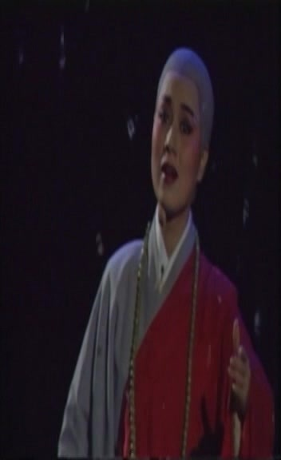
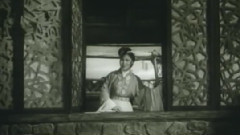
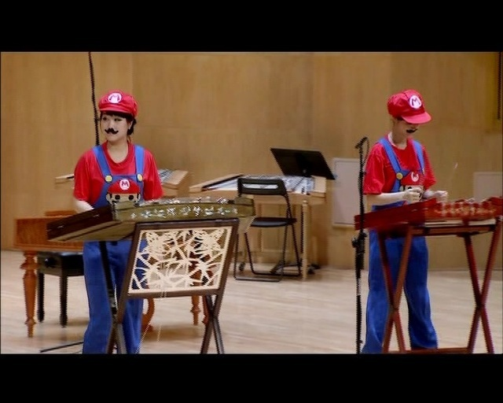
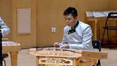

主办：音悦Tai中国科学文化音像出版社北京电视艺术中心音像出版社
音悦Tai立志做全球最大的音乐平台，就有着把中国好音乐传播给全世界的使命感。渗入不同年龄阶段的用户群，把传统戏曲民谣和流行音乐业务相融合，改变单一的传播方式，我们要做的就是整合中国传统艺术，弘扬民俗文化。音悦Tai是全球性的音乐爱好者的交互平台，我们下一个目标重点就是挖掘国内那些具有强烈民族特色的音乐展现在全世界音乐爱好者的面前，即是对中国音乐博大精深的赞扬，也是对中国音乐文化的传承和发展。
在全球数字化、大资料、大数据的背景下，我们必须打破常规思路，运用新技术、新架构对民俗艺术进行多维度、立体化的内容创作与展示
音悦Tai在高清MV的领域有着强大的网络数字技术和市场拓展能力，我们2014年与中国科学文化音像出版社和北京电视艺术中心音像出版社等国内知名的出版社展开了深度合作，对其出版的多种戏曲、舞蹈、乐器的CD、VCD、DVD等内容进行数字化加工处理，我们即将推出的“音悦云”和“音悦棒”产品就打破了载体、格式和传输限制，用户操作简便、辐射人群更为广泛，即使是网络覆盖不发达的地区，也将能无障碍欣赏我们的民俗盛宴。
中国科学文化音像出版社
中国科学文化音像出版社有限公司(前身为中国科学文化音像出版社)是一家由中国出版集团公司主管、世界图书出版公司主办的以音像制品和电子出版物出版业务为主的出版机构。
中国科学文化音像出版社有限公司以制作出版专业类、科学类以及高品质文艺类作品见长，自成立来已制作出版几千种科学、文化、文艺类音像和电子产品。历年来曾多次荣获“国家音像制品奖”、“中国金唱片奖”、“全国优秀文艺音像制品奖”、“中华优秀出版物奖”等国家和行业奖项。
中国科学文化音像出版社有限公司以弘扬华夏文明，推广科学文化为己任，倡导音像文化新潮流为使命。
北京电视艺术中心音像出版社
作为中国最有影响、最具实力与成就的电视剧专业制作单位之一，中心28年来取得了一系列令人瞩目的成就，完成了一系列思想性，艺术性俱佳的电视剧精品，为繁荣电视剧创作，丰富电视荧屏，满足人们日益增长的文化需求，为两个文明建设做出了突出贡献。
戏曲了解更多>>
中国的戏曲与希腊悲剧和喜剧、印度梵剧并称为世界三大古老的戏剧文化，经过长期的发展演变，逐步形成了以“京剧、越剧、黄梅戏、评剧、豫剧”五大戏曲剧种为核心的中华戏曲百花苑。 中国戏曲剧种种类繁多，据不完全统计，中国各民族地区地戏曲剧种约有三百六十多种，传统剧目数以万计。
戏曲艺术发展到今天，经过不同的时代，不断适应新时代、新观众的需要，保持和发扬民族传统的艺术特色，戏曲界提出的“现代化”与“戏曲化“的问题，已成为新的历史时期积极探讨和积极实践的问题。
-

- 牡丹亭2014全国昆曲传承汇报演出 A1
黄梅戏了解更多>>
黄梅戏,旧称黄梅调或采茶戏，与京剧、越剧、评剧 、豫剧并称“中国五大戏曲剧种”，也是安徽省的主要戏曲剧种。黄梅戏唱腔通俗易懂，淳朴流畅，以明快抒情见长，具有丰富的表现力；黄梅戏的表演质朴细致，以真实活泼著称。一曲《天仙配》让黄梅戏流行于大江南北，在海外亦有较高声誉。
黄梅戏的起源最早可追溯到唐代。据史料记载，早于唐代时期，黄梅采茶歌就很盛行，经宋代民歌的发展、元代杂剧的影响，逐渐形成民间戏曲雏形。至明清，黄梅县戏风更盛。2006年5月20日经国务院批准列入第一批国家级非物质文化遗产名录。
- 
- 红楼梦 1
豫剧了解更多>>
豫剧起源于中原（河南），是中国五大戏曲剧种之一，中国第一大地方剧种。近几年，豫剧跟随河南卫视，河南豫剧院，台湾豫剧团等演出团体走过了世界诸多国家，如到澳大利亚、意大利、法国、加拿大、委内瑞拉、新西兰、德国、英国、美国、泰国、巴基斯坦等国家演出，被西方人称赞是“东方咏叹调”，“中国歌剧”等。
豫剧起源于中原（河南），是中国五大戏曲剧种之一，中国第一大地方剧种。近几年，豫剧跟随河南卫视，河南豫剧院，台湾豫剧团等演出团体走过了世界诸多国家，如到澳大利亚、意大利、法国、加拿大、委内瑞拉、新西兰、德国、英国、美国、泰国、巴基斯坦等国家演出，被西方人称赞是“东方咏叹调”，“中国歌剧”等。
- 
- 豫剧三绝之花木兰 1

- 豫剧三绝之花木兰 2

- 豫剧三绝之花木兰 3

- 豫剧三绝之花木兰5

- 牡丹亭2014全国昆曲传承汇报演出 A8

- 华容道

- 宇宙锋

- 探皇陵

- 强项令

- 宇宙锋

- 遇皇后打龙袍

- 刘长瑜唱段精选1

- 霸王别姬2

- 小上坟

- 黄梅戏三绝之女驸马

- 对花(黄梅戏)
- 豫剧三绝之花木兰 3
- 豫剧三绝之花木兰5
- 牡丹亭2014全国昆曲传承汇报演出 A8
- 华容道
- 宇宙锋
- 探皇陵
- 强项令
- 宇宙锋
- 遇皇后打龙袍
- 刘长瑜唱段精选1
- 霸王别姬2
- 小上坟
- 黄梅戏三绝之女驸马
- 对花(黄梅戏)
- 豫剧三绝之花木兰5
- 牡丹亭2014全国昆曲传承汇报演出 A8
越剧了解更多>>
越剧——中国第二大剧种，有第二国剧之称，又被称为是“流传最广的地方剧种”，有观点认为是“最大的地方戏曲剧种”，在国外被称为“中国歌剧”。亦为中国五大戏曲剧种之一。发源于浙江嵊州，发祥于上海，繁荣于全国，流传于世界，在发展中汲取了昆曲、话剧、绍剧等特色剧种之大成，经历了由男子越剧到女子越剧为主的历史性演变。
越剧长于抒情，以唱为主，声音优美动听，表演真切动人，唯美典雅，极具江南灵秀之气；多以“才子佳人”题材为主，艺术流派纷呈，公认的就有十三大流派之多。越剧为首批国家级非物质文化遗产名录。

- 红楼梦 2

- 孟丽君 3

- 小辞店 1

- 小辞店 2

- 严凤英演唱专辑 2

- 玉堂春 1

- 玉堂春 2

- 无事生非 2

- 无事生非 3

- 劈棺惊梦 1

- 劈棺惊梦 2

- 劈棺惊梦 4

- 西厢记 1

- 桂小姐选郎1

- 桂小姐选郎2

- 桂小姐选郎3

- 李师师与宋徽宗1

- 李师师与宋徽宗4

- 小辞店1

- 小辞店2

- 徽商情缘1

- 徽商情缘2

- 徽商情缘3

- 生死擂1

- 生死擂2
河北梆子了解更多>>
河北梆子是中国梆子声腔的一个重要支脉，形成于清道光年间（1821—1850），清光绪初年进入兴盛时期。河北梆子在剧种方面不仅擅长于表现历史题材，而且能很好地反映现实生活；在舞台艺术上，无论是音乐、表演以及舞台美术方面，都有极大的变化和明显的提高，从而使河北梆子增添了明朗、刚劲、华丽、委婉的特点，流行于河北、天津、北京以及山东、河南、山西部分地区，成为中国北方影响较大的汉族戏曲剧种之一。
河北梆子在其兴盛期，还曾传入中国东北三省、江淮地区以及俄罗斯和蒙古人民共和国境内。2006年5月20日，河北梆子经国务院批准列入第一批国家级非物质文化遗产名录。
-

- 河北梆子 宝莲灯1
- 豫剧三绝之花木兰 2
- 豫剧三绝之花木兰 3
- 豫剧三绝之花木兰5
- 牡丹亭2014全国昆曲传承汇报演出 A8
- 华容道
- 宇宙锋
- 探皇陵
- 强项令
- 宇宙锋
- 遇皇后打龙袍
- 刘长瑜唱段精选1
- 霸王别姬2
- 小上坟
- 黄梅戏三绝之女驸马
- 对花(黄梅戏)
- 豫剧三绝之花木兰 3
- 豫剧三绝之花木兰5
- 牡丹亭2014全国昆曲传承汇报演出 A8
- 华容道
- 宇宙锋
- 探皇陵
- 强项令
- 宇宙锋
- 遇皇后打龙袍
- 刘长瑜唱段精选1
- 霸王别姬2
- 小上坟
- 黄梅戏三绝之女驸马
- 对花(黄梅戏)
- 豫剧三绝之花木兰5
- 牡丹亭2014全国昆曲传承汇报演出 A8
文化碰撞了解更多>>
音乐无国界，不同形式、不同国家的音乐之间的合作会产生怎样的效果呢？例如，中国近代发展出的一种以中国民族乐器为基础，再学习西方交响乐团的编制而成立乐队类型，被称之为民乐团。很多传统乐曲是借着不停的演奏，口传心授，流派风格的演变而来，并没有专责作曲的概念；现代不少民乐团都会委约作曲家专为乐团创作新作品。因此整体而言，不论在乐团编制和乐曲创作上，民乐团都是一个中西音乐相结合的产物。
在上个世纪八九十年代，在中国涌现出了一大批杰出的摇滚乐队和乐手。这些摇滚乐队最突出的特点就是具有鲜明的中国特色，在演唱的曲目大都加入了中国民族乐器的演奏。并且使民乐与摇滚乐完美的结合在一起。在当代，也有不少音乐人把民乐与西方音乐尝试结合在一起，同时也收到了显著的效果。
- 
- 超级玛丽 蝴梦飞竹扬琴音乐会 现场版

- 雨的联想 蝴梦飞竹扬琴音乐会 现场版

- 第一乐章 木石前盟 红楼梦昆曲交响清唱剧

- 第二乐章 诗礼簪缨 红楼梦昆曲交响乐

- 第四乐章 大势已去 红楼梦昆曲交响清唱剧
- 
- 罗 卡农 蝴梦飞竹扬琴音乐会 现场版

- 自由探戈 蝴梦飞竹扬琴音乐会 现场版